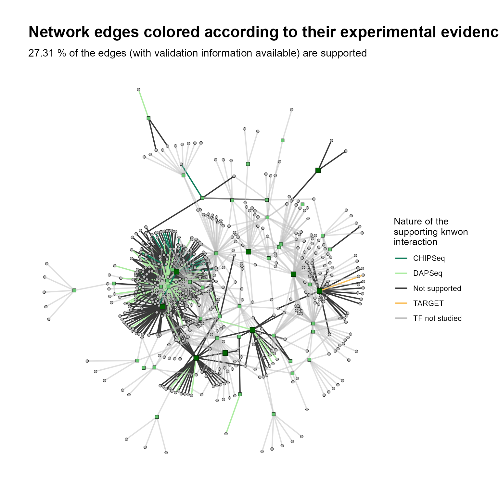
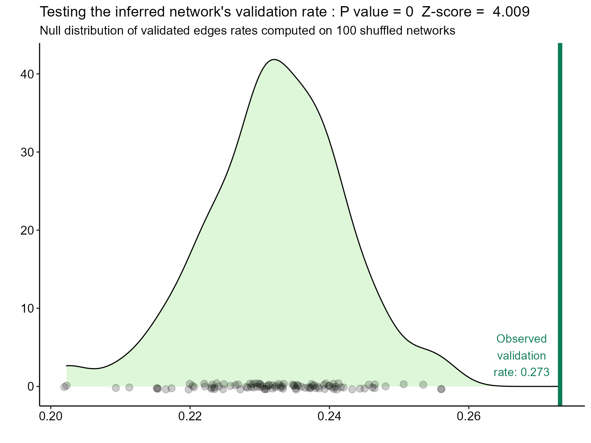
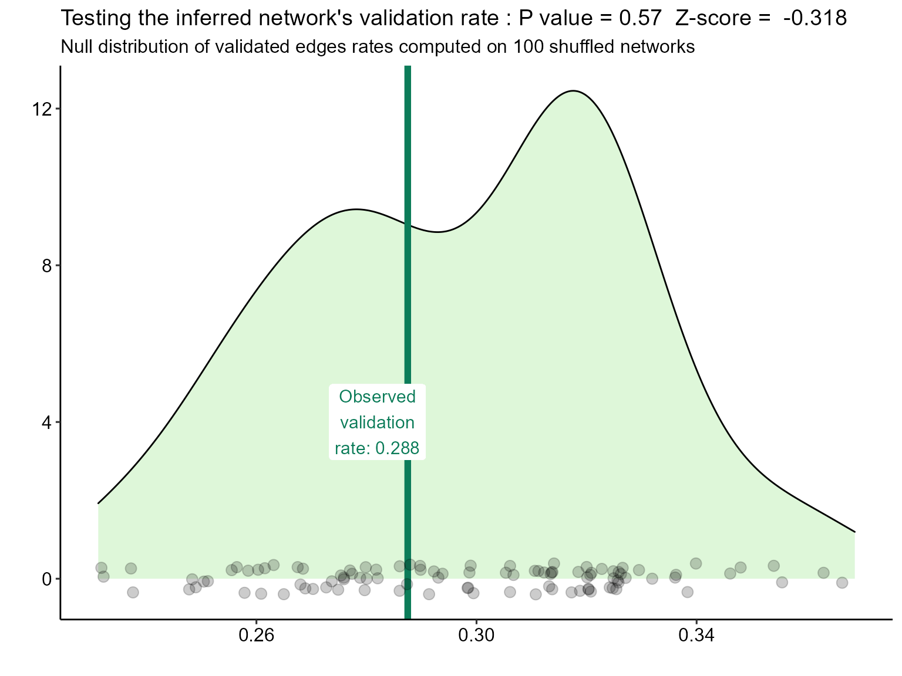

Using-AraNetBench.RmdAraNetBench is a package designed to evaluate the result of a network inference method against on known, experimentally determined, regulatory interactions in Arabidopsis thaliana.
In systems biology, reconstructing gene regulatory networks is at the same time an ultimate goal, as well as a real challenge. Usually, network inference methods predict connections between genes using expression values in a set of experimental conditions and genes of interest. Those predicted connections are supposed to carry information about the transcriptional dependencies at stake in the response to a developmental of adaptive mechanism.
However, biological systems and the true regulatory networks orchestrating gene expression changes in cells are still far from being fully mapped. This makes it very difficult to asses weather network inference methods correctly predict those regulatory relationships between genes.
AraNetBench was made in an effort quantitatively validate inferred networks in Arabidopsis thaliana against the connecTF database. Although the connecTF plateform is a great online graphical tool, is does not allow to streamline and generalize the validation processes like scripts or automated pipelines would offer.
This package thus contains several functions that can be called from R scripts given any inferred network in the form of an edges dataframe. Those functions :
Compute evaluation metrics on an inferred network such as true positives and true positive rate (interactions that are supported by experimental evidence), or false positives and false positive rate.
Display a view of the network, with its edges colored depending on their validation status, and the nature of the supporting information in connecTF.
Asses if the inference allowed a significant improvement in biological meaning over randomness.
library(AraNetBench)AraNetBench comes with its companion dataset, i.e an infered network of genes responsive to heat under manitol stress. The data was collected by Sewelam et Al. Molecular plant responses to combined abiotic stresses put a spotlight on unknown and abundant genes. J Exp Bot. 2020., and a network on those genes was inferred in the article presenting DIANE.
Here is an overview of this infered network :
| from | to |
|---|---|
| AT5G43840 | AT1G52690 |
| AT5G43840 | AT4G17470 |
| AT1G66390 | AT4G08570 |
| mean_AT1G01060-AT3G09600-AT5G24110-AT3G12910-AT5G56960-AT1G20693-AT2G37430 | AT3G22235 |
| mean_AT1G17460-AT5G57150-AT5G60100-AT5G48250-AT3G62090-AT1G09530-AT5G63160-AT1G76590-AT3G11020-AT1G11100-AT1G67370-AT3G14740 | AT1G60190 |
| AT1G44830 | AT5G65390 |
All input networks should be formatted identically (i.e a column from, and a column to, both containing gene AGI). If the inferred network comes from DIANE (not a prerequiste), grouped regulators will be temporarily ungrouped to compute evaluation metrics, then regrouped for visualisation.
The validation database contains different experiment types to confirm predicted interactions :
| Var1 | Freq |
|---|---|
| CHIPSeq | 206974 |
| DAPSeq | 1983037 |
| Litterature | 1431 |
| TARGET | 85144 |
By default, DAPSeq, CHIPSeq and TARGET data are used. This can by altered with the validation argument, containing the desired nature of the validation links.
Call evaluate_network to compute evaluation metrics on an inferred network such as true positives and true positive rate (interactions that are supported by experimental evidence), or false positives and false positive rate. It will also return the same network as the input, but with an additional column about the supporting information on each edge.
For reproducible results, set the seed before random networks perumtations :
set.seed(999)
results <- evaluate_network(abiotic_stress_Heat_genes_net)
results[c("tp", "fp", "tpr", "fpr")]
#> $tp
#> [1] 266
#>
#> $fp
#> [1] 708
#>
#> $tpr
#> [1] 0.2731006
#>
#> $fpr
#> [1] 0.7268994
knitr::kable(head(results$edges, n = 20))| from | to | type | |
|---|---|---|---|
| 27 | mean_AT5G03740-AT1G56170 | AT5G48657 | CHIPSeq |
| 29 | mean_AT5G03740-AT1G56170 | AT5G46050 | CHIPSeq |
| 30 | mean_AT5G03740-AT1G56170 | AT3G46110 | CHIPSeq |
| 34 | mean_AT5G03740-AT1G56170 | AT1G66880 | CHIPSeq |
| 39 | mean_AT5G03740-AT1G56170 | AT4G14365 | CHIPSeq |
| 41 | mean_AT5G03740-AT1G56170 | AT2G35980 | CHIPSeq |
| 46 | AT5G43840 | AT4G02280 | CHIPSeq |
| 141 | mean_AT5G03740-AT1G56170 | AT5G57010 | CHIPSeq |
| 150 | mean_AT5G03740-AT1G56170 | AT1G78860 | CHIPSeq |
| 153 | mean_AT5G03740-AT1G56170 | AT2G37980 | CHIPSeq |
| 194 | mean_AT5G03740-AT1G56170 | AT4G37900 | CHIPSeq |
| 207 | mean_AT5G03740-AT1G56170 | AT3G15356 | CHIPSeq |
| 208 | mean_AT5G03740-AT1G56170 | AT5G19240 | CHIPSeq |
| 226 | mean_AT5G03740-AT1G56170 | AT4G21903 | CHIPSeq |
| 297 | mean_AT5G03740-AT1G56170 | AT2G02930 | CHIPSeq |
| 339 | mean_AT5G03740-AT1G56170 | AT1G62300 | CHIPSeq |
| 405 | mean_AT5G03740-AT1G56170 | AT2G39210 | CHIPSeq |
| 412 | mean_AT5G03740-AT1G56170 | AT1G30720 | CHIPSeq |
| 413 | mean_AT5G03740-AT1G56170 | AT3G19930 | CHIPSeq |
| 455 | mean_AT5G03740-AT1G56170 | AT1G35230 | CHIPSeq |
To display a view of the network, with its edges colored depending on their validation status, and the nature of the supporting information in connecTF, call draw_evaluated_network on the result of evaluate_network :
draw_evaluated_network(results)
To save the output in a file :
draw_evaluated_network(results, export = TRUE, filename = "evaluated_network.png")To test if the network contains biological signal or if the rate of validated edges does not differ from what is expected under random inference, run test_validation_rate on the inferred network.
For example, DAPSeq, CHIPSeq and TARGET information clearly seem to be captured by the network inference in the demo dataset:
test_validation_rate(abiotic_stress_Heat_genes_net, N = 100)
Whereas CHIPSeq signal alone in the network could have been achieved by randomly linking TFs to targets…
test_validation_rate(abiotic_stress_Heat_genes_net, validation = c("CHIPSeq"), N = 100)
Other functions to come soon, like drawing ROC curves on fully connected weighted inferred networks!